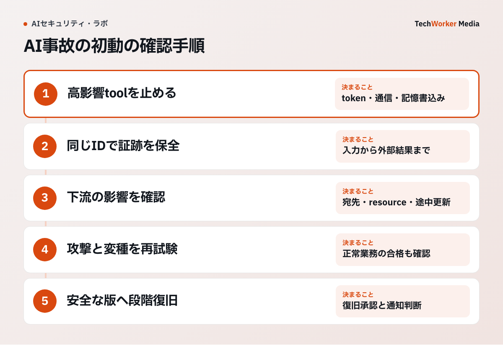

参照した文書の指示にAIが従い、意図しないツール操作を始めた。こうした事態では、返答の修正より先に、進行中の処理と影響範囲を確認する必要があります。NISTのリスク管理の考え方を踏まえ、停止、証拠保全、復旧の手順を示します。
一次資料：NISTの生成AIリスク管理の枠組み（2024年7月26日、2026年4月8日更新、確認：2026年10月6日）
to incorporate trustworthiness considerations into the design, development, use, and evaluation of AI products, services, and systems.
出典：NIST AI RMF Generative AI Profile。NISTは、AIの設計・開発・利用・評価を通じて信頼性を考慮する枠組みを示しています。以下の初動手順は、その考え方を踏まえたTechWorkerの設計案です。

NISTは生成AI事故を継続的なリスク管理へ戻す
NISTの生成AIプロファイルは、生成AIのリスクを統治、把握、測定、管理の循環で扱います。事故対応も一度の停止で終わらず、原因と影響を測り、対策と運用へ戻す作業です。
プロンプトインジェクションでは、表示された不正出力より、エージェントが何を実行したかが被害を決めます。
最初の15分で実行経路を止める
対象エージェントの待ち行列を止め、外部送信ツールと書込みツールを無効にします。漏えいの可能性がある認証情報は失効し、ブラウザセッションとOAuthトークンも切ります。モデルだけを停止しても、別実行処理が待ち行列を処理すれば事故は続きます。
停止時刻、止めた構成要素、担当者を記録します。記録削除処理は一時停止し、証拠保全先を読取り専用にします。
入力文だけでなくツール呼出しと外部システムを追う
入力文、参照したウェブ・ファイル・メール、モデル応答、ツールの引数、ツールの結果、承認履歴を同じ要求IDでつなぎます。外部システム側では、送信済みメール、変更レコード、ダウンロード、権限変更を確認します。
影響が未確定なら「漏えいなし」と報告しません。確認済み範囲と未確認範囲を分けます。
原因別に境界を直して段階復旧する
外部文書が原因なら、その取得経路を隔離し、命令として扱わない表示へ変えます。ツール権限が広すぎたなら権限範囲を縮めます。承認をすり抜けたなら、承認対象と実行内容をハッシュ値で結びます。
復旧は読取り専用の作業から始め、次に下書き、最後に外部送信へ進みます。各段階で同じ攻撃入力を再現し、以前の経路が失敗することを確かめます。